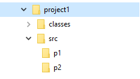

Компиляция программ
Для компиляции программ в командной строке используется команда javac. Это стандартный компилятор языка Java. Синтаксис команды javac следующий:
javac [ключи] [имена_исходных_файлов]
Получение списка возможных ключей компилятора:
javac –help
Чтобы скомпилировать программу MyApp, необходимо запустить компилятор, указав имя исходного файла в командной строке:
javac MyApp.java
Компилятор javac создаст файл MyApp.class. В нем будет находиться байт-код для Java-машины. В процессе компиляции исходного кода каждый отдельный класс помещается в собственный выходной файл, называемый по имени класса и получающий расширение .class.
Компиляция с опцией -d
Опция -d позволяет указать директорию назначения, куда будут складываться скомпилированные файлы классов. По умолчанию компилятор записывает сгенерированный .class в тот же каталог, где находится исходник класса .java. Это удобно для небольших проектов, но при работе на крупных проектах файлы .java и .class разумнее хранить отдельно.
Пример: Компиляция с ключом -d
Например имеется следующая структура каталогов:
Следующая команда, выполненная из каталога lesson1 сгенерирует файл MyFirstApp.class и запишет его в каталог classes (предполагается, что MyFirstApp не содержит оператора package):
cd lesson1
javac -d classes source/MyFirstApp.java
Пример: Компиляция с ключом -d пакетных файлов
Далее необходимо рассмотреть пример компиляции класса com.company.lesson1.MyFirstApp, находящегося в пакете com.company.lesson1. Имеется следующая структура каталогов:

Следующая команда, выполненная из каталога src, сгенерирует файл MyFirstApp.class, и запишет его в каталог classes/com/company/lesson1:
cd myProject/src
javac -d ../classes com/company/lesson1/MyFirstApp.java
Если каталог classes/com/company/lesson1 не существует, то он будет создан при компиляции.
Если же не существует каталог classes, то получится ошибка компиляции.
Запуск Java-программы
Чтобы выполнить программу из командной строки, следует воспользоваться загрузчиком приложений Jаvа, который называется java. Синтаксис команды java следующий:
java [ключи] класс [аргументы]
Чтобы выполнить программу, следует передать имя класса MyFirstApp (предполагается, что MyFirstApp не содержит оператора package) в качестве аргумента командной строки:
java MyFirstApp
Если класс MyFirstApp находится в пакете, то необходимо выполнить команду:
java com.company.lesson1.MyFirstApp
Необходимо обратить внимание, что в обеих случаях при запуске программы указывается только имя класса, без расширения *.class.
Компиляция с опцией -sourcepath
Пример: Компиляция с ключом -sourcepath
Далее показан пример, в котором имеется два класса из разных пакетов - p1.Example1 и p2.Example2. Класс p1.Example1 создает экземпляр объекта p2.Example2:
package p1;
import p2.Example2;
public class Example1 {
public static void main(String[] args) {
Example2 example2 = new Example2();
System.out.print("Done!");
}
}
package p2;
public class Example2 {
}
В проекте создана нижеприведенная структура каталогов:

Попробуем скомпилировать Example1.java тем же способом, что и раньше:
cd project1
javac –d classes src/p1/Example1.java
Результат компиляции:
src\p1\Example1.java:9: error: package p2 does not exist
p2.Example2 example2 = new p2.Example2();
^
src\p1\Example1.java:9: error: package p2 does not exist
p2.Example2 example2 = new p2.Example2();
^
2 errors
Ошибки произошли из-за того, что хотя компилятор javac знал, где находится файл Example1.java, но при этом он не знал, где находится Example2.java. Для решения этой проблемы используется ключ sourcepath, который указывает каталоги, в которых компилятор должен искать иерархию исходных файлов. В нашем случае это каталог src.
Строку компиляции следует переписать так:
javac -d classes -sourcepath src src/p1/Example1.java
С такой командой программа компилируется без ошибок. Необходимо обратить внимание, что компилятор javac одновременно скомпилировал и файл Example2.java, на который ссылается скомпилированный файл Example1.java.
Ключ sourcepath может содержать несколько каталогов, разденных точкой с запятой (то обычно в этом нет необходимости). Например, если нужно включить локальный каталог src и Windows-каталог C:\projects\anotherproject\src, где хранятся исходники другого проекта, то используется следующая команда:
javac -d classes -sourcepath src;C:\projects\anotherproject\src
src/p1/Example1.java
Стоит отметить, что данная команда не компилирует каждый файл, найденный в какой-либо из этих иерархий. Она скомпилирует только файлы, на которые прямо или косвенно ссылается единичный файл *.java, который был передан на компиляцию.
Итог: ключевые моменты